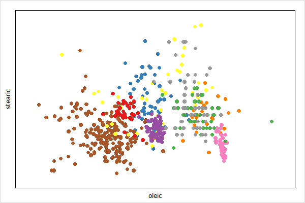
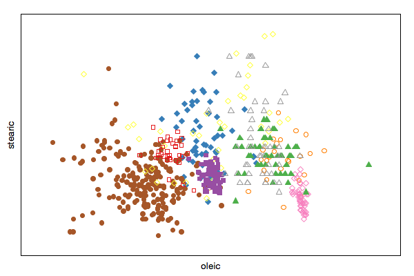
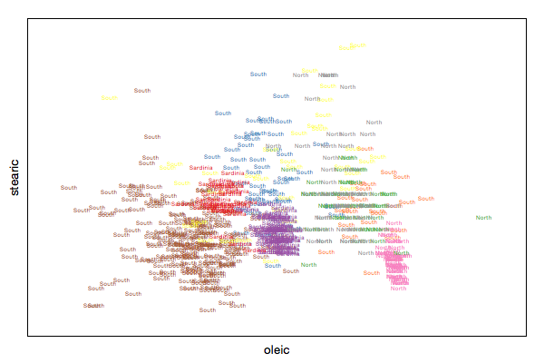
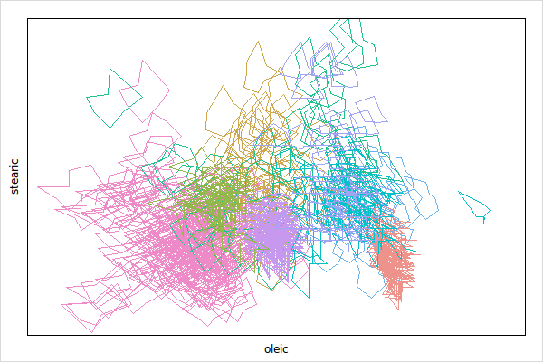
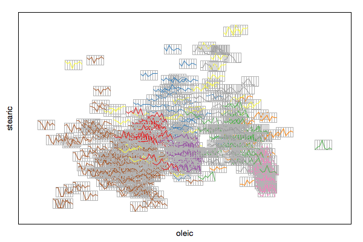
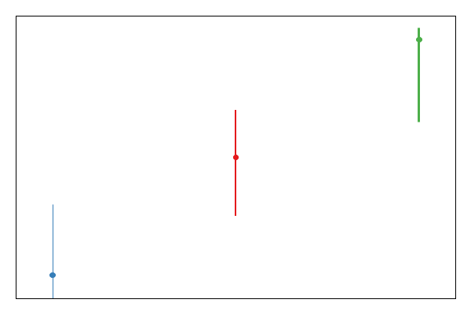
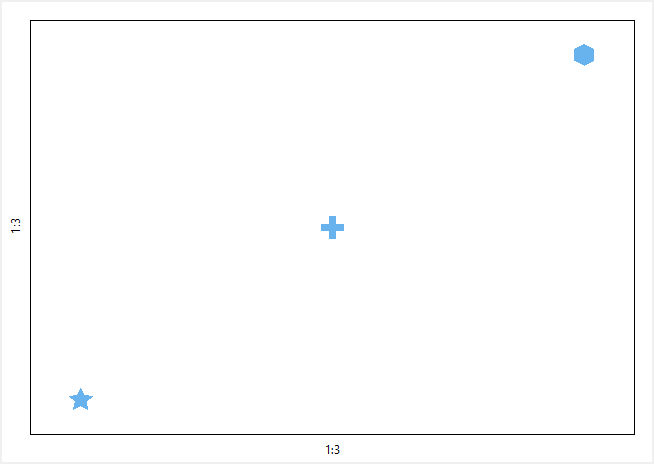
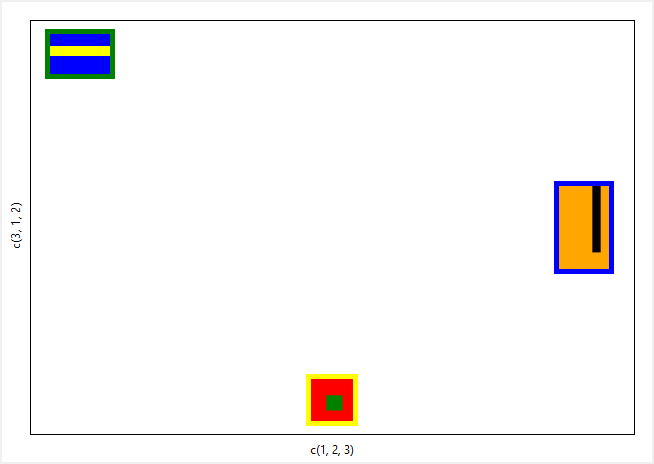
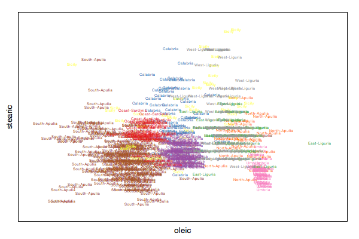

namespace import loon::*
# extract variables
dict for {name value} $loon::data::olive {set $name $value}
set p [plot -x $oleic -y $stearic -color $Area -xlabel oleic -ylabel stearic]or alternatively
dict with ::loon::data::olive {
set p [loon::plot -x $oleic -y $stearic -color $Area \
-xlabel oleic -ylabel stearic]
}Get the state names with
set states [$p info states]
dict keys $statesQuery a state, say background, as follows
$p cget -backgroundChange a state, say again background and foreground, as follows
$p configure -background gray20 -foreground gray90When creating a plot you may specify any state at plot creation
set p1 [-x $oleic -y $stearic -color $Area -xlabel oleic -ylabel stearic\
-background gray20 -foreground gray90]details on a state, say background, is easily had with
set states [$p info states]
dict get $states backgroundand a particular field
dict get $states background descriptionThe visual representation of a point can be changed for each point separately with the n dimensional state glyph. The supported glyph types are detailed in the following sections.
The supported primitives are circle, ocircle, ccircle, square, osquare, csquare, triangle, otriangle, ctriangle, diamond, odiamond and cdiamont.
package require loon
namespace import loon::*
dict for {name value} $loon::data::olive {set $name $value}
set p [plot -x $oleic -y $stearic -color $Area\
-xlabel oleic -ylabel stearic]
set glyphmap [dict create\
South-Apulia circle\
North-Apulia ocircle\
Inland-Sardinia square\
Coast-Sardinia osquare\
East-Liguria triangle\
West-Liguria otriangle\
Calabria diamond\
Sicily odiamond\
Umbria cdiamond]
$p configure -glyph [lmap a $Area {dict get $glyphmap $a}]
The non-primitive glyphs are the following

The non-primitive glyphs require user specified data. Adding a glyph type requires to specify the glyph data for each of the n points. If n of the plot changes the glyph will be deleted.
Glyphs, like plots and layers, have states and support state bindings. You can query and modify the glyph states, or add state bindings to glyphs at run time as shown below.
Text glyphs are character strings for each point
set gt [$p glyph add text -text $Region]
$p configure -glyph $gt
Serialaxes glyph show either a star or a parralel coordinate glyph for each point.
set oliveacids [dict filter $loon::data::olive script {key value} {
return -level 0 [expr {$key ni {Area Region}}]
}]; puts "filter data"
set gs [$p glyph add serialaxes -data $oliveacids -showArea FALSE]
$p configure -glyph $gs
Change the glyph appearance as explained in Query and Modify Glyph States
$p glyph use $gs configure -axesLayout parallel -showEnclosing TRUE \
-showAxes TRUE
Please also see the serialaxes display documentation for more information regarding working with serialaxes.
If every point has a point range associated you can visualize this information with the pointrage glyph.
set p1 [plot -x {1 2 3} -y {1 2 3} -color {1 2 3}]
set gr [$p1 glyph add pointrange -ymin {0 1.5 2.3}\
-ymax {1.6 2.4 3.1} -linewidth {1 2 3} -showArea FALSE]
$p1 configure -glyph $gr
A polygon can be a useful point glyph to visualize arbitrary shapes such as airplanes, animals and shapes that are not available in the primitive glyph types (e.g. cross).
First we specify the coordinates of the polygons, note that it is your responsibility to center them at 0 and to specify an appropriate size. A good range for the polygon coordinates is from -1 to 1.
set x_star \
[list -0.000864304235090734 0.292999135695765 0.949870354364736 \
0.474503025064823 0.586862575626621 -0.000864304235090734 \
-0.586430423509075 -0.474070872947277 -0.949438202247191 \
-0.29256698357822]
set y_star \
[list -1 -0.403630077787381 -0.308556611927398 0.153846153846154 \
0.808556611927398 0.499567847882455 0.808556611927398 \
0.153846153846154 -0.308556611927398 -0.403630077787381]
set x_cross \
[list -0.258931143762604 -0.258931143762604 -0.950374531835206 \
-0.950374531835206 -0.258931143762604 -0.258931143762604 \
0.259651397291847 0.259651397291847 0.948934024776722 \
0.948934024776722 0.259651397291847 0.259651397291847]
set y_cross \
[list -0.950374531835206 -0.258931143762604 -0.258931143762604 \
0.259651397291847 0.259651397291847 0.948934024776722 \
0.948934024776722 0.259651397291847 0.259651397291847 \
-0.258931143762604 -0.258931143762604 -0.950374531835206]
set x_hexagon \
[list 0.773552290406223 0 -0.773552290406223 -0.773552290406223 \
0 0.773552290406223]
set y_hexagon \
[list 0.446917314894843 0.894194756554307 0.446917314894843 \
-0.447637568424085 -0.892754249495822 -0.447637568424085]Then you can use those polygon coordinates to specify polygon glyphs as follows
set p [plot -x {1 2 3} -y {1 2 3}]
set gl [$p glyph add polygon -x [list $x_star $x_cross $x_hexagon]\
-y [list $y_star $y_cross $y_hexagon]]
$p configure -glyph $gl
Image glyphs rely on the Tcl procedure image_scale for image resizing. The loon package comes with a image_scale procedure that is pure Tcl code (i.e. interpreted). To improve the image resizing speed it is possible to install the ImageScale Tcl extension. loon will check when it is loaded whether the ‘ImageScale’ package is installed and will use the faster procedure (also in R).
We first start by creating the images manually and then show how to load images form files.
set img1 [image create photo -width 30 -height 20]
$img1 put blue -to 0 0 30 20; $img1 put yellow -to 0 6 30 11
set img2 [image create photo -width 80 -height 80]
$img2 put red -to 0 0 80 80; $img2 put green -to 30 30 60 60
set img3 [image create photo -width 60 -height 100]
$img3 put orange -to 0 0 60 100; $img3 put black -to 40 0 50 80Note that the images above have different sizes. The loon scatterplot will resize the images (i.e. all glyph types) such that their areas are proportional to their associated point sizes.
The images are added as follows
set p [plot -x {1 2 3} -y {3 1 2}\
-color {green yellow blue} -size {4 3 7}]
set gi [$p glyph add image -images [list $img1 $img2 $img3]\
-label "Abstract Art"]
$p configure -glyph $gi
The non-primitive glyphs (or n dimensional glyphs) have states. To demonstrate how to work with glyph states we take the text glyph example from above again:
package require loon
namespace import loon::*
dict for {name value} $loon::data::olive {set $name $value}
set p [plot -x $oleic -y $stearic -color $Area -xlabel oleic -ylabel stearic]
set gt [$p glyph add text -text $Region]
$p configure -glyph $gtThe procedure to list and get information about them is similar as outlined in the <a href=‘’learn_Tcl_states.html’>states section. For example get the state names of a glyph with
set gtstates [$p glyph use $gt info states]
dict keys $gtstatesThen to query a state, say text, use
And to modify a state
$p glyph use $gt configure -text $Area
Glyph labels are used in the plot and glyph inspector. You can specify the glyph labels when creating the glyphs:
dict for {name value} $loon::data::olive {set $name $value}
set p [plot -x $oleic -y $stearic -color $Area -xlabel oleic -ylabel stearic]
set gt [$p glyph add text -text $Region -label Region]
$p configure -glyph $gtor you may relabel once the glyphs already exist
$p glyph relabel $gt "Region String"Note, that the label is part of the glyph collection and not the glyph states.
To get all glyph ids with for a plot
$p glyph idsTo delete a glyph use
$p glyph delete $gtWhen deleting a glyph every point that was displayed as that glyph will be switched to circle.